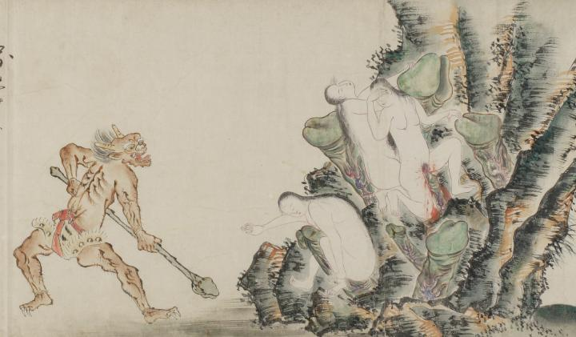

茶色い鬼。2本の角を生やし、舌を出すように大きく口を開けている。薄く体毛が生えた筋肉質の体で、虎皮を腰に巻き赤い帯で縛りつけている。緑色の長い棒をもち、亡者たちを責めている。棒の先端は男根の形をしている。
出典：親書誌：U426_nichibunken_0058：地獄草紙絵巻；ジゴクゾウシエマキ／日付：2006／資源識別子：U426_nichibunken_0058_0008_0000
Copyright (c)2010- International Research Center for Japanese Studies, Kyoto, Japan. All rights reserved.